1. ¿Qué es KioscoApp?
KioscoApp es una aplicación de gestión integral para kioscos y pequeños comercios. Te permite registrar ventas, administrar productos e inventario, controlar la caja diaria, llevar cuentas corrientes de clientes (fiados), registrar compras y consultar reportes financieros.
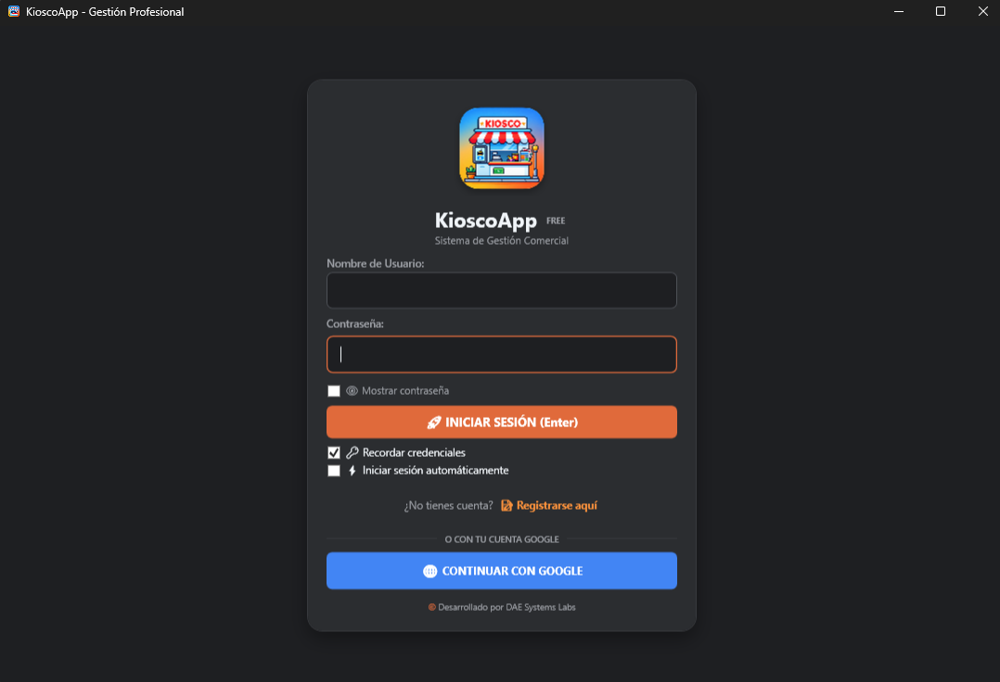
2. Ingreso al Sistema
Para comenzar a utilizar la aplicación en tu computadora:
- Abrí KioscoApp desde el acceso directo.
- Escribí tu nombre de usuario o correo electrónico configurado para el comercio.
- Ingresá tu contraseña de seguridad.
- Presioná INICIAR SESIÓN (o Continuar con Google si está disponible).
4. Abrir la Caja al Comenzar el Día
Es el paso inicial obligatorio antes de registrar operaciones de venta.
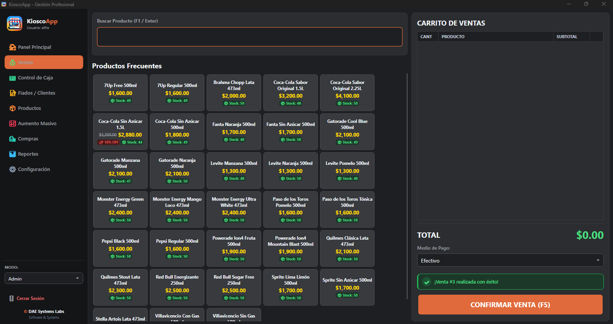
- Entrá en Control de Caja.
- Si la caja está cerrada, ingresá el Monto inicial en efectivo disponible físicamente.
- Presioná ABRIR CAJA y verificá que el estado indique abierta.
5. Registrar una Venta
La pantalla de ventas está optimizada para agilizar la atención al cliente.
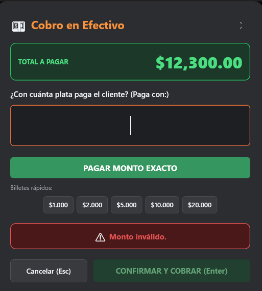
- Entrá en la sección Ventas.
- Buscá el producto por nombre o escaneando su código de barras.
- Seleccionalo para agregarlo al carrito de compras.
- Revisá las cantidades y el total. Cuando esté listo, presioná CONTINUAR (F1).
6. Cobro de una Venta en Efectivo
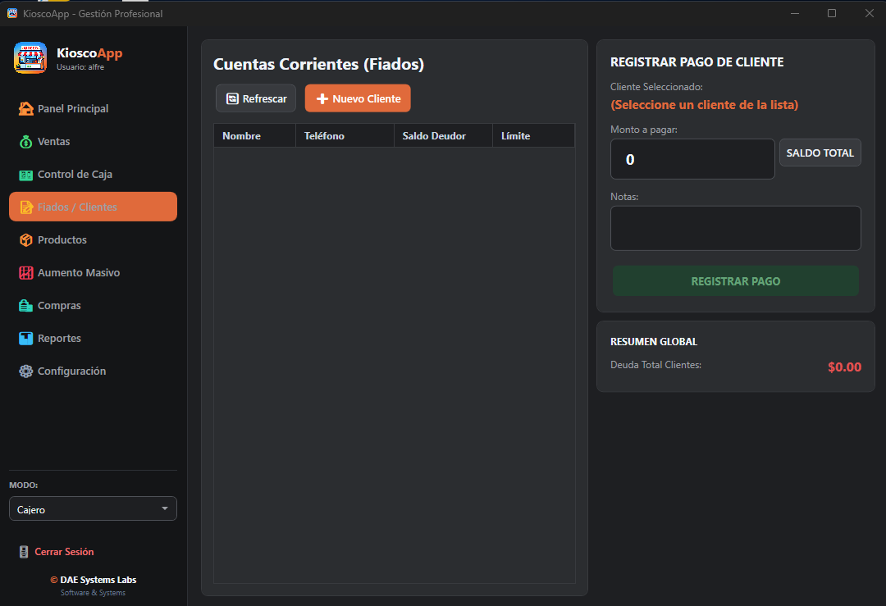
- Revisá el TOTAL A PAGAR en pantalla.
- Ingresá el efectivo recibido del cliente (o usá "Pagar monto exacto").
- El sistema calculará automáticamente el vuelto correspondiente.
- Presioná CONFIRMAR Y COBRAR (Enter) para finalizar.
7. Clientes y Cuentas Corrientes (Fiados)
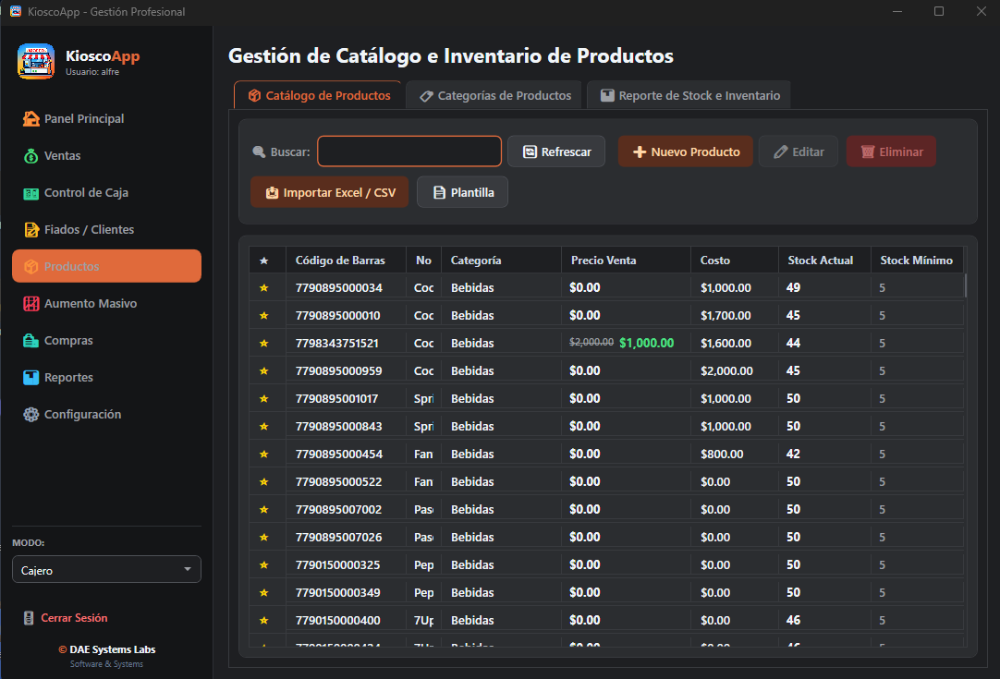
Permite registrar clientes, otorgar ventas al fiado y registrar pagos parciales o totales de sus cuentas corrientes de forma ordenada.
8. Productos e Inventario
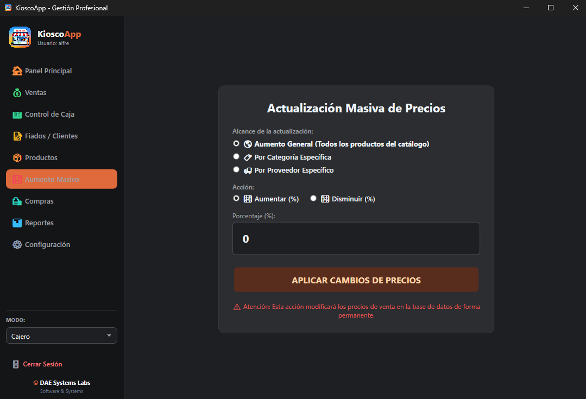
Administrá el catálogo completo (nombre, código de barras, categoría, precio, costo y stock). También podés importar productos masivamente mediante planillas Excel / CSV.
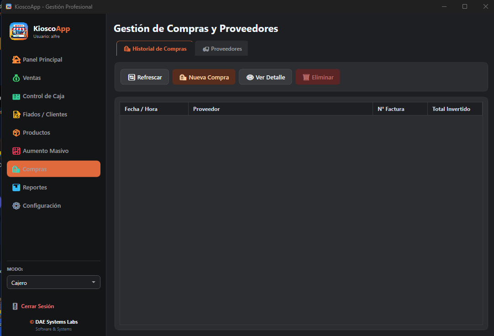
9. Aumento Masivo de Precios
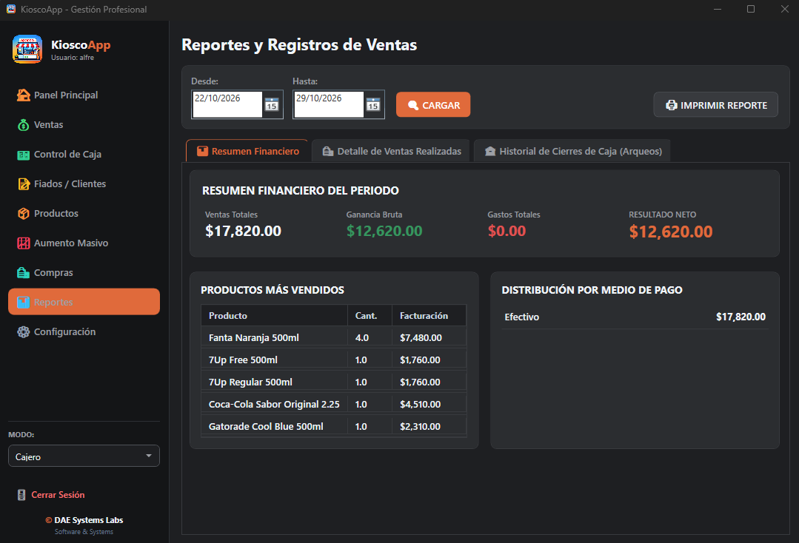
Modificá precios de manera global aplicando porcentajes o montos fijos a categorías completas o proveedores sin necesidad de editar producto por producto.
10. Compras y Proveedores
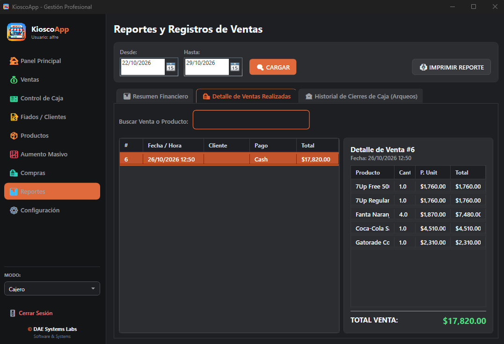
Permite cargar compras de mercadería, asociarlas a proveedores y actualizar costos e inventario automáticamente.
11. Reportes y Movimientos
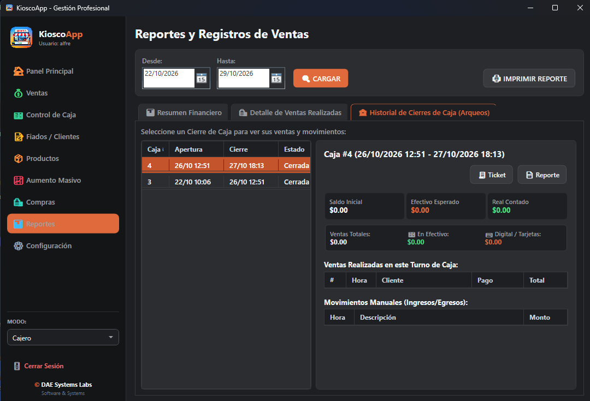
Consultá el rendimiento financiero del negocio seleccionando fechas (Desde / Hasta), analizando productos más vendidos, ganancias y medios de pago.
12. Cierre de Caja
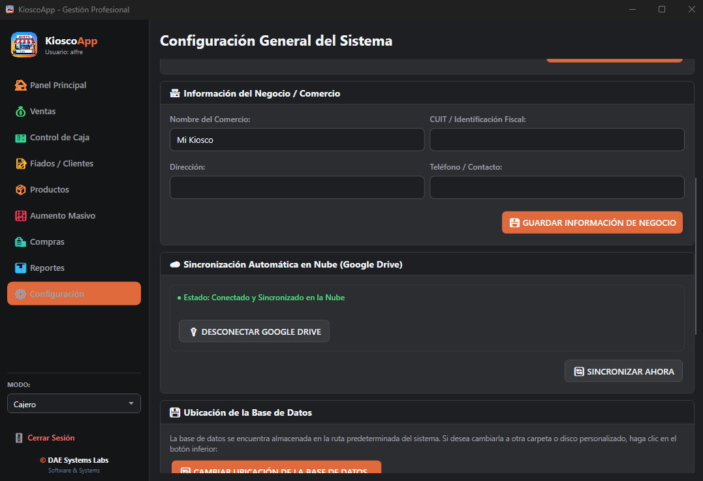
Al finalizar el día, contá el efectivo real en caja, ingrésalo en el sistema para contrastarlo con el total esperado y detectá cualquier diferencia antes de cerrar.
13. Configuración y Sincronización
Permite actualizar los datos fiscales del negocio, sincronizar respaldos con Google Drive y gestionar la base de datos de manera segura.
14. Rutina Diaria Recomendada
- Al abrir: Iniciar sesión, abrir caja con el monto inicial exacto y revisar stock crítico.
- Durante el día: Registrar cada venta, pagos de clientes y gastos.
- Al cerrar: Contar efectivo, verificar movimientos y realizar el cierre de caja.
15. Preguntas Frecuentes y Solución de Problemas
¿Qué hago si hay diferencia al cierre de caja?
Revise las ventas en efectivo registradas, gastos y retiros antes de confirmar. Nunca ajuste el efectivo contado para forzar el cierre.
¿Cómo actualizo precios rápidamente?
Utilice la herramienta de Aumento Masivo filtrando por categoría o proveedor.